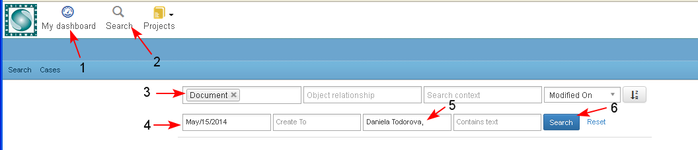
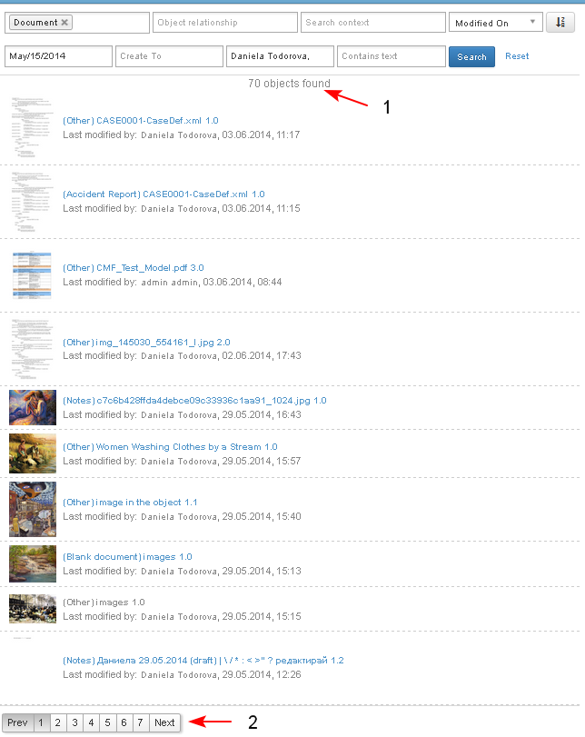

The Search operation allows the user to search among all documents or other system objects to which he/ she has access.
- The user starts the search operation from his/ her Personal Dashboard/ Search (1-2)
- A screen opens and the user selects from the first drop-down menu the Object Type - Document (3).
- The user selects other search criteria if needed (4-5). The following are available: Object type, Object relationship, Search context, Modified On, Create From, Create To, Created By, Contains text.
- The user clicks the button "Search" (6)

- The system displays the search results in a table view, paginated (1-2), which contain the following columns: Document Type, Document State, Version, Last modified by, date and time of last modification.
The Document Type, Document State and Version are a direct link to open the corresponding document.
